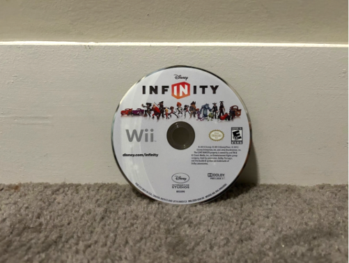
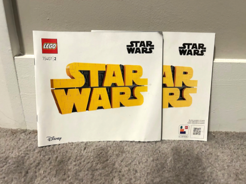
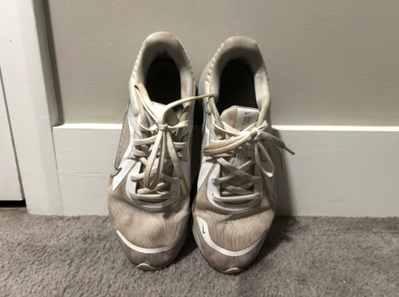
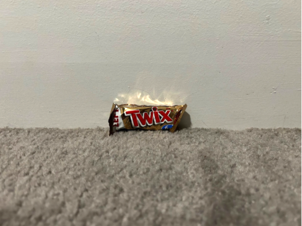
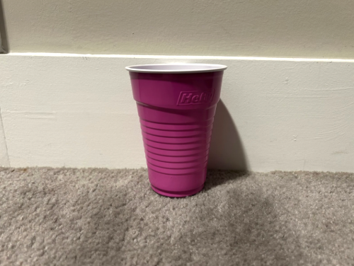
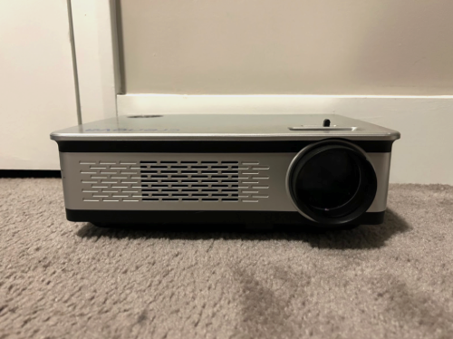
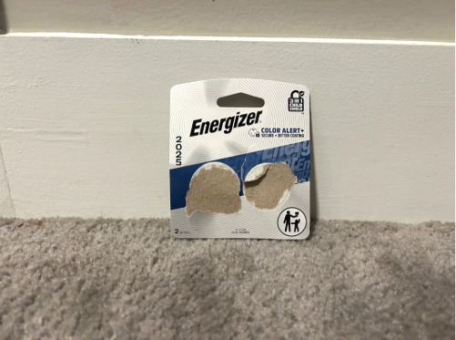
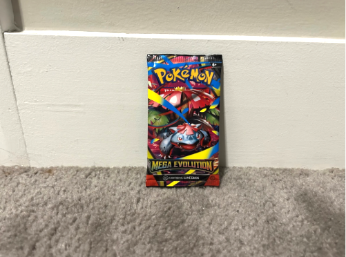
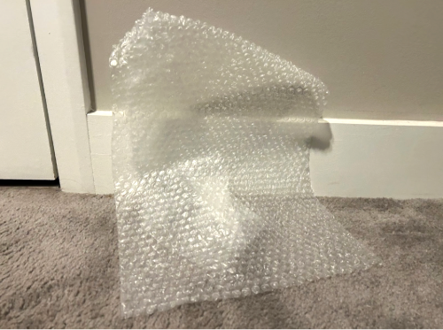

Week 10: Cleaning Out My Tiny Apartment Space
What's This About?
You may have visited this page wondering, “Why is this person sharing the items she threw away over the course of a week?”
As a college student living on campus in an apartment, I have very little space in my bedroom to store the many items I possess. I have countless games, collectibles, clothes, art supplies, shoes, and other items crowding my space. When I have too many items in my space, I feel overwhelmed and have more trouble doing my work at my desk.
I am sharing my trash this week to force myself to declutter; if I select a sufficient amount of items to discard to make a webpage, I can clean out my space and make it more accessible for myself. I have many items lying around that have never or no longer serve a purpose to me. Blogging them motivates me to identify these insignificant items and take the action of throwing them away instead of lazily leaving them to take up space. If I have a following relying on me to produce trash to share on my webpage, I am more likely to take initiative to find items I can clear out of my space.
Weekly Overview
This week, I am returning to my apartment after my college’s winter break. This selection of trash items sat in my room over the month.
Now that I have returned and have a new schedule, I want a clean apartment to do the work in for my new classes. I picked out nine items for this week; they are all items that have been sitting unused for over a month. For the most part, I did not have difficulty parting ways with these items. A few of them hold sentimental value in different ways, but I am content with the fact that they have left my space. Items such as these have a temporary purpose and must be parted with eventually.
Used and Loved
The first category of trash includes items that have been used over a long period of time. One wore, one broke, and one simply is not needed anymore.
The item that wore is a pair of Nike Quest sneakers I have had for four years. These sneakers, white and size 7, were my everyday sneakers until I went to college. At the very first party I went to, they turned purple from how crowded it was and how disgusting the floors were. I kept the shoes to wear to other parties I went to over my freshman and sophomore years so I would not ruin another pair of shoes. However, I have stopped going to crowded parties this school year; thus, the shoes have been sitting in the corner of my bedroom for a while. I gave them to my parents to donate.
The item that broke is a Wii disc of the game Disney Infinity. This disc was heavily used as well, but not by me this time. My boyfriend grew up playing the game using this disc. He brought it to my apartment from his house so we could play together. However, when we tried to insert the disc into the Wii, the Wii gave us a black screen saying the disc could not be read. I tried the known methods of fixing this issue such as blowing on the disc and wiping it with a cloth, but nothing worked. So, I parted with it, concluding that it was not salvageable.
The last item, the one that does not have a use anymore, is a pair of manuals for the LEGO Star Wars Logo set. Me and my boyfriend worked on this set over the course of three weeks. The manual was essential while we were building the set, but it became useless once we finished it. He told me he wanted to throw them away, so I took care of it.
Gained but Never Used
The next category of items are ones that I received from somebody else, but never actually used for their intended purpose. I never utilized any of the three, and I decided that I will never have a reason to in the future either.
The first of these items is a Twix bar that came from Halloween. My parents had some leftover candy that they had gotten for the trick-or-treaters that they did not want to throw away. They gave it to me to take to my apartment. I ate most of the candy, but left this Twix in particular sitting in my candy bucket. The reason for this is that I do not like caramel. Now that I think about it, I do not know why I did not get rid of this bar sooner. It took me going away for break and then returning to realize that it was just sitting there. I gave it to my friend.
The next item is a solo cup that I acquired from my boyfriend’s house; it was leftover from a party that his roommate had. It comes from the brand Hefty, and it is magenta in color. You would think that I would take this cup to drink from it. You would be wrong. I took it to use for an assignment for a design class where I had to represent a simple everyday object in sixteen different ways. After I photographed the cup and did the assignment. I no longer needed it.
The final item in this category is a Crenova projector. I acquired this projector from Facebook Marketplace a while back; I traded a video game that I did not want for it in hopes to trade or sell it. It was not gaining traction on Facebook until very recently. I was finally able to sell it this week.
Packaging
I wanted to include this category in my trash documentation because I realized in particular this week how much packaging I throw away. Packaging is essential for any item that is purchased, yet we throw it away as soon as we acquire it. I thought that was interesting.
After finding which type of key fob battery I needed for my car, I bought a pack at the store yesterday. The pack came with two small round batteries. The moment I took the batteries out of the packaging, the packaging became clutter.
The second packaging item has much more sentimental value to me; it is a Pokémon card booster pack that my friend gave me as a late Christmas present. I opened this pack and added the cards inside to my collection. It took me a little longer to part ways with the wrapper than with the battery packaging because it had more meaning to me. Also, the artwork of Venusaur on the front of the wrapper is really cool. “Why would you get rid of it if you like it?” you may ask? Well, there is something about the fact that millions of those wrappers are circulating, and I will continue to get them over time. This principle devalues the wrappers for me.
The final item included in this Trash of the Week update is a sheet of bubble wrap. I love keeping the bubble wrap from packages that I receive because it acts as a fidget toy for me. I put it in a drawer and take it out every once in a while to pop some of the bubbles. In comparison to the other two packaging items, the bubble wrap was in my space for much longer. Once I could not find any more bubbles to pop, I threw it in the trash.
Image Gallery

Disney Infinity Wii disc

LEGO Star Wars logo set manuals

Old sneakers

Twix bar

Solo cup, Hefty brand

Projector, Crenova brand

Key fob battery packaging

Opened Pokémon booster pack

Sheet of bubble wrap
Item Data
| Item | Weight | Source | Location | Cost | Time Owned | Disposal | Sad to see it go? |
|---|---|---|---|---|---|---|---|
| Wii Disc | 170 g | Boyfriend | Desk | $75 | 1 month | Yes | |
| LEGO Manual | 400 g | Target | Desk | $50 | 3 weeks | Yes | |
| Sneakers | 3 lbs | Famous Footwear | Bedroom floor | $80 | 4 years | Yes | |
| Twix | 50 g | Parents | Desk | $1 | 3 months | No | |
| Solo Cup | 10 g | Boyfriend’s house | Desk | $1 | 1 week | No | |
| Projector | 3.5lbs | Facebook Marketplace | Bedroom shelf | $0 | 6 months | No | |
| Battery Packaging | 7 g | Target | Desk | $6 | 1 day | No | |
| Booster Pack | 2g | Friend | Organizer drawer | $5 | 1 week | Yes | |
| Bubble Wrap | 10g | A package | Organizer drawer | $0 | 1 month | Yes | |
Coda
Thank you for tuning into week 10 of my Trash of the Week Project! Your support is incentivizing me to keep my apartment space clean and my mind less overwhelmed. Next week, I will be traveling to New York City. Many of the items included in my blog will come from that trip. Hopefully, documenting them in this project will provide me with a way to summarize my day and remember it.